Draw page by page
Your last page glows faintly underneath — red before, blue after — so tracing the next one is easy. Pen, marker, neon, pencil, shapes and fill.
A pocket studio for your phone. Record and mix songs, film covers with studio sound, and animate page by page — the pages flip right on the beat.
Draw an animation page by page — or turn your photos into one — then add a song. AP-OWO finds the tempo for you, so every page lands exactly on the beat.
Your last page glows faintly underneath — red before, blue after — so tracing the next one is easy. Pen, marker, neon, pencil, shapes and fill.
Add any song and AP-OWO detects its tempo and beats. Pages flip on the music — no counting, no tapping. See the waveform and drag to choose the best part.
Draw where a move starts and where it ends. AP-OWO draws the frames in between, with slow-in and slow-out like a real animator.
Shoot toys, clay or paper a frame at a time with your last shot ghosted over the camera — or pick photos and get a story that cuts on the beat.
Camera zoom and pan per page, a punch on the drops, pulse, shake and flash on every beat — plus lyrics that stay up for as many beats as you like.
Export an MP4 with your song (up to 4K, 60 fps), a looping GIF, or a see-through sticker — shaped for Reels, TikTok, Shorts, Instagram or LinkedIn.
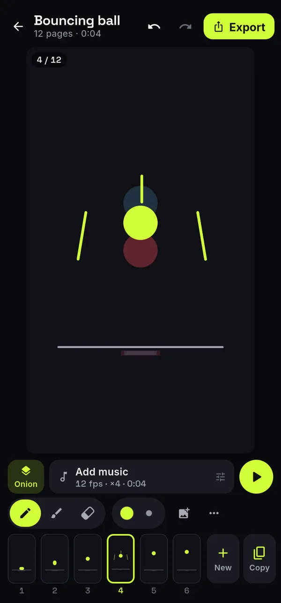
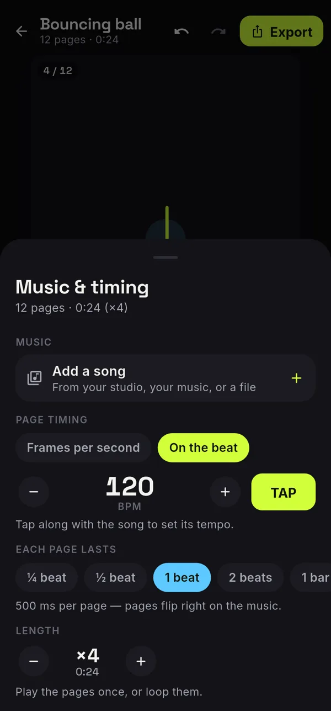
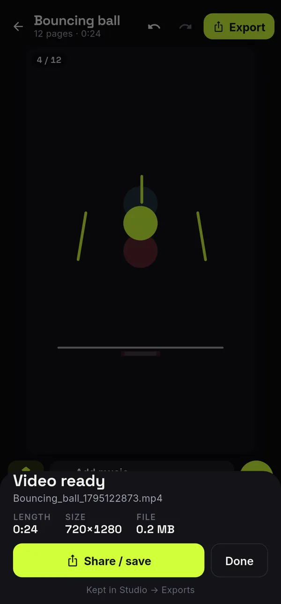
In the Studio tab. Start blank, from photos, with stop motion, or from a ready-made example.
Your last page shows underneath to trace. Two-finger tap to undo.
From your studio, your music or a file. The beat is found automatically.
Hear it with your song, tweak a page, and export an MP4 for wherever you post.
Everything you need to make something and post it — in one app, on your phone.
From the first take to a finished, platform-ready video.
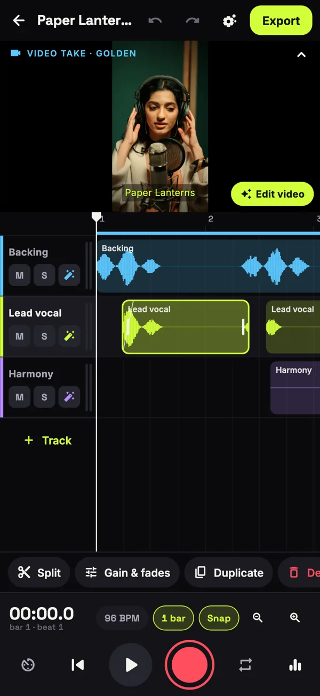
Count-in, metronome, unlimited takes.
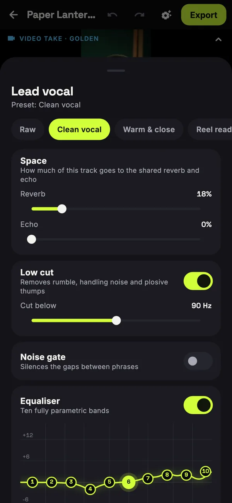
EQ, compressor, de-esser, reverb — one-tap presets.
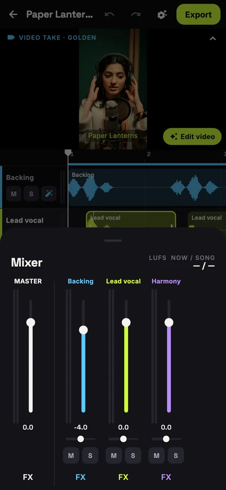
Matched to −14 LUFS so you sound as loud as everyone else.
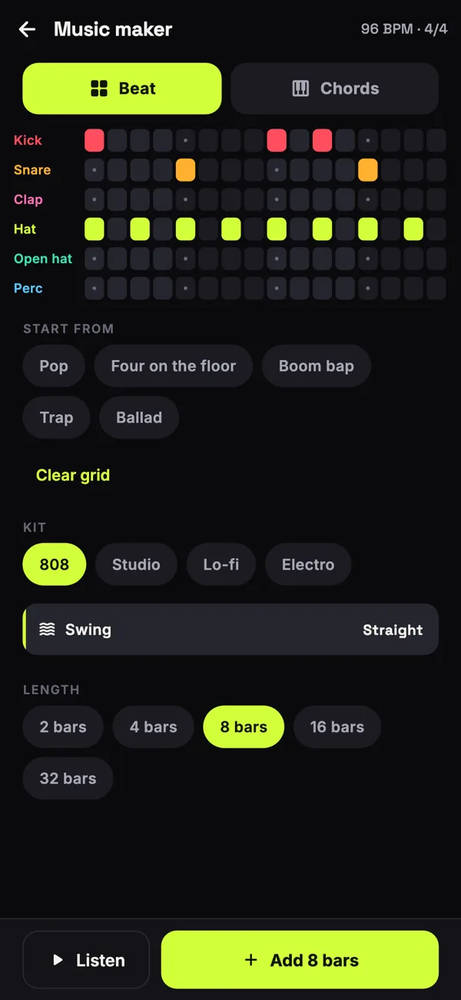
Step sequencer, four kits, swing — and chords in any key.
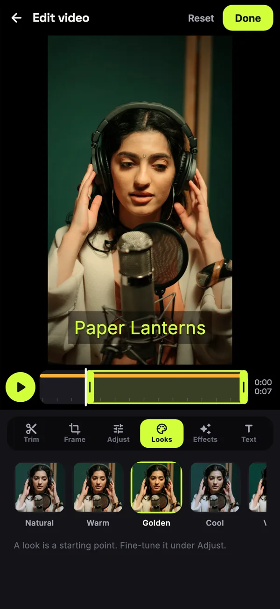
Camera picture, studio sound, film looks.
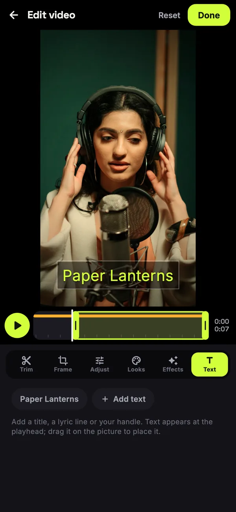
Pulse, shake, flash and timed captions.
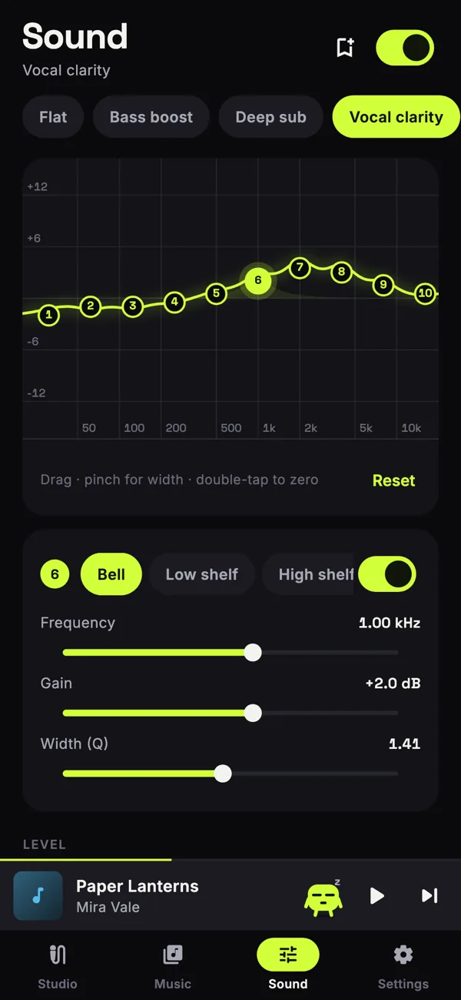
Your library, tuned to your ears.
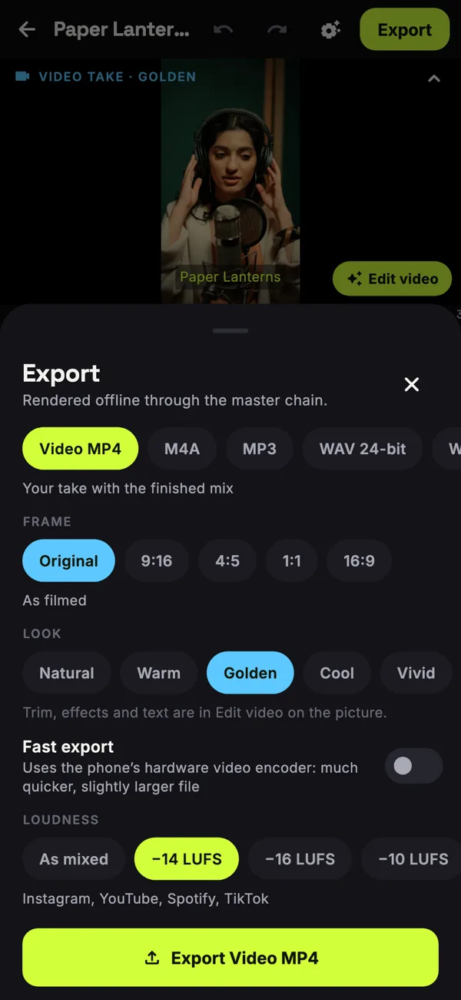
MP4 for socials; WAV, MP3 or M4A for streaming.
Pick where it's going; AP-OWO frames it for you.
Your recordings, music, drawings and projects are stored on your device and leave it only when you share them.
Open it and start making. Nothing to sign up for, and no advertising ID.
Anonymous usage statistics help us improve the app — never your content. Switch them off any time in Settings. Read the privacy policy.
Yes. Every feature — recording, mixing, filming and animation, including 4K and 60 fps exports — is free, with no ads and no account.
AP-OWO is on Android (8.0 and newer) through Google Play. It adapts to slower phones automatically and works on tablets too.
No. Start from a ready-made example like the bouncing ball, turn your photos into a story, or shoot stop motion with objects. Auto in-betweens do a lot of the drawing for you.
Yes. Pressure sets the line weight, your palm can rest on the screen, the eraser end erases, and a size ring shows while the pen hovers.
Exported videos carry a small AP-OWO mark in one corner. It's tiny, and it's how people find the app when they see your work.
Yes — songs on your phone, any audio file, or a mix you made in the AP-OWO studio. Make sure you have the rights to post any music you use.
Yes. Recording, drawing, mixing and exporting all happen on your phone, with no internet needed.
Record a song, film a cover, or draw a few pages and drop a beat under them.
Free onGoogle Play